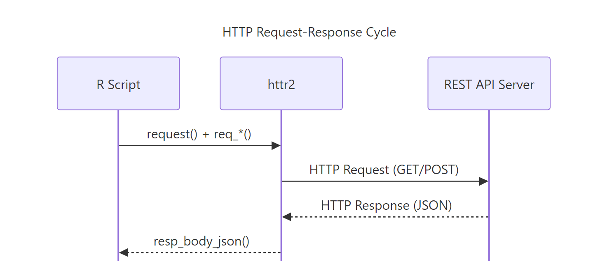
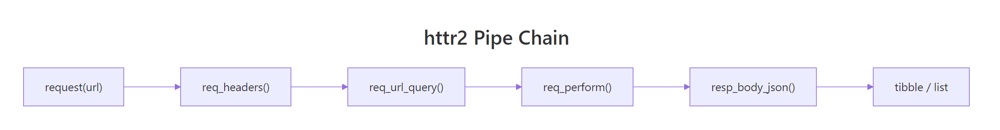
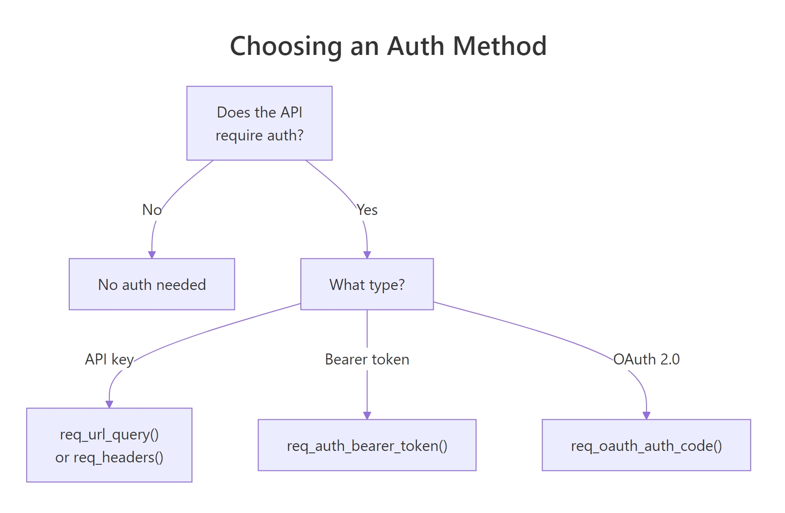

REST APIs in R with httr2: GET, POST, OAuth, and Paginated Results
httr2 is the modern R package for calling REST APIs, it lets you build HTTP requests with a pipe chain, handle authentication, parse JSON responses, and paginate through results automatically.
Introduction
Most interesting data does not come in a CSV file. It lives behind an API. Whether you need live weather forecasts, financial quotes, social media metrics, or government statistics, you will call a REST API to get it. R makes this straightforward with the httr2 package.
httr2 is the successor to the original httr package, redesigned from scratch by Hadley Wickham. Instead of separate GET() and POST() functions, httr2 uses a single request() object that you build up with pipe-friendly req_*() functions. This design makes complex requests, with authentication, rate limiting, and pagination, just as easy to write as simple ones.
In this tutorial, you will learn how to make GET and POST requests, parse JSON responses, authenticate with API keys, Bearer tokens, and OAuth 2.0, handle errors and retries, apply rate limiting, and paginate through multi-page results. By the end, you will have a complete toolkit for pulling data from any REST API into R.
install.packages("httr2") and execute locally.What is a REST API and how does R talk to one?
A REST API is a web service that accepts HTTP requests and returns structured data, usually JSON. REST stands for Representational State Transfer, but the name matters less than the mechanics. You send a request with a verb (GET, POST, PUT, DELETE), a URL, optional headers, and an optional body. The server processes it and returns a response with a status code, headers, and a body.
Think of it like ordering at a restaurant. You (the client) tell the waiter (HTTP) what you want (the request). The kitchen (the server) prepares it and sends back your meal (the response). The menu (the API documentation) tells you what you can order and how to ask for it.

Figure 1: The HTTP request-response cycle: R sends a request through httr2, the API server returns a JSON response.
The four most common HTTP verbs map to familiar database operations. GET retrieves data (like a SELECT query). POST creates new data (like an INSERT). PUT updates existing data (like an UPDATE). DELETE removes data. Most data-fetching work in R uses GET requests, but you will also use POST when sending data to an API.
How do you install httr2 and make your first GET request?
Getting started with httr2 takes three steps: install the package, create a request object, and perform it. The request() function takes a URL and returns a request object. The req_perform() function sends it. The resp_body_json() function parses the JSON response into an R list.
Let's start with a simple GET request to httpbin.org, a free testing service that echoes back whatever you send it.
A status code of 200 means success. The response body shows the request headers and URL that the server received. This confirms httr2 is working.

Figure 2: The httr2 pipe chain: request() starts the chain, req_() functions modify it, req_perform() sends it, and resp_() functions extract data.
Now let's call a real API. The Dog CEO API returns a random dog image URL with no authentication required.
The response is a list with two elements: message (the image URL) and status. This is the typical pattern, call resp_body_json() to get a list, then extract the fields you need.
req_perform() with req_dry_run() in your pipe chain to see the exact HTTP request that would be sent.How do you add query parameters and custom headers?
Many APIs require query parameters, the ?key=value pairs at the end of a URL. Instead of manually constructing URLs, use req_url_query() to add them cleanly. For custom headers, use req_headers().
Let's fetch weather data from the Open-Meteo API, which provides free weather forecasts without authentication. It requires latitude, longitude, and the variables you want as query parameters.
The req_url_query() function builds the URL https://api.open-meteo.com/v1/forecast?latitude=51.5074&longitude=-0.1278¤t=temperature_2m,wind_speed_10m&timezone=Europe/London for you. This is cleaner and less error-prone than concatenating strings.
Custom headers tell the server about your client. The most important ones are Accept (what format you want back) and User-Agent (who you are).
The backticks around User-Agent are needed because the header name contains a hyphen. R treats it as an expression otherwise.
How do you send data with POST, PUT, and DELETE?
GET requests retrieve data. POST requests send data to the server, for creating records, submitting forms, or triggering actions. httr2 provides three body-encoding functions: req_body_json() for JSON, req_body_form() for form data, and req_body_multipart() for file uploads.
Let's POST a JSON payload to httpbin.org, which echoes it back so you can verify what was sent.
Notice that you did not need to call req_method("POST"). When you add a body with req_body_json(), httr2 automatically switches the method to POST. The R list is serialized to JSON, nested lists become JSON arrays, named lists become JSON objects.
For APIs that expect form-encoded data (like HTML forms), use req_body_form() instead.
The difference is the Content-Type header. req_body_json() sends application/json, while req_body_form() sends application/x-www-form-urlencoded. The API documentation tells you which one to use.
req_body_raw() for binary data, then you must specify the content type yourself.For PUT and DELETE requests, add req_method() to your pipe chain.
How do you authenticate API requests?
Most production APIs require authentication. The three most common methods are API keys, Bearer tokens, and OAuth 2.0. Each serves a different use case, and httr2 has built-in support for all three.

Figure 3: Choosing an authentication method: no auth, API key, Bearer token, or OAuth 2.0.
API keys are the simplest. The API gives you a string, and you include it in every request, either as a query parameter or a header. Here is the query parameter approach.
Bearer tokens are used by APIs that issue short-lived access tokens. You include the token in the Authorization header. httr2 provides a convenience function for this.
The req_auth_bearer_token() function adds the header Authorization: Bearer <token> to your request. This is equivalent to calling req_headers(Authorization = paste("Bearer", token)), but cleaner and less error-prone.
OAuth 2.0 is the most complex authentication flow. It involves registering your app, redirecting the user to a login page, receiving an authorization code, and exchanging it for an access token. httr2 handles the entire flow.
When you run this, httr2 opens your browser for login, receives the callback, exchanges the code for a token, caches it, and attaches it to the request. On subsequent runs, it reuses the cached token until it expires.
.Renviron file (one KEY=value per line) and read them with Sys.getenv("KEY"). This keeps credentials out of version control. Run usethis::edit_r_environ() to open the file.How do you handle errors, retries, and rate limits?
APIs fail. Servers go down, rate limits get hit, and networks drop. httr2 provides three layers of resilience: automatic error detection, configurable retries, and request throttling.
By default, httr2 converts any 4xx or 5xx HTTP status code into an R error. This means a failed request stops your script immediately instead of silently returning bad data. You can customize the error message to include details from the API's response body.
The body argument to req_error() is a function that receives the response and returns a string. This string is appended to the error message, making it much easier to diagnose failures.
For transient errors (server overload, network timeouts), add req_retry() to automatically retry failed requests with exponential backoff.
httr2 will attempt the request up to 3 times, waiting 1 second before the first retry, 2 seconds before the second, and so on. It only retries on 429 (Too Many Requests) and 503 (Service Unavailable) status codes by default.
To prevent hitting rate limits in the first place, use req_throttle(). This limits how many requests httr2 sends per second.
The rate applies across all requests to the same host, even if you create separate request objects. This is global rate limiting, httr2 tracks it automatically.
How do you paginate through multi-page API results?
Many APIs return data in pages. A search might match 10,000 records, but the API returns 100 at a time. You need to loop through all pages to get the complete dataset. httr2 offers two approaches: a manual loop and the automatic req_perform_iterative() function.
Here is the manual approach using an offset-based API. This works with any API that accepts page or offset parameters.
This loop fetches 20 Pokemon per page, appending results to a list. It stops when the API's next field is NULL (no more pages) or after 5 pages as a safety limit.
For APIs that follow standard pagination patterns, req_perform_iterative() automates the loop. You provide a callback that tells httr2 how to build the next request from the current response.
The iterate_with_offset() helper increments the offset parameter by 20 each time. The resp_pages callback tells httr2 the total number of pages so it knows when to stop. The max_reqs parameter adds a safety cap.
resps_data() with an extraction function to combine them. This keeps the raw responses available for debugging if any page fails.Common Mistakes and How to Fix Them
Mistake 1: Forgetting to call req_perform()
The request() function and all req_*() functions return a request object, they do not send anything. The request sits idle until you call req_perform().
Why it is wrong: The variable resp contains a request, not a response. Calling resp_body_json(resp) on it will throw an error because it is not a response object.
Mistake 2: Manually parsing JSON instead of using resp_body_json()
Some programmers extract the body as text and then call jsonlite::fromJSON(). This works but skips httr2's built-in parsing and error checking.
Why it is wrong: resp_body_json() handles character encoding, checks the Content-Type header, and integrates with httr2's error system. Manual parsing bypasses all of this.
Mistake 3: Hard-coding API keys in your script
Why it is wrong: If you commit this file to Git, your key is exposed to anyone with repository access. Automated scanners on GitHub detect leaked keys within minutes.
Mistake 4: Not throttling requests in a loop
Why it is wrong: Most APIs enforce rate limits (e.g., 60 requests per minute). Exceeding them results in 429 errors and potential IP bans.
Mistake 5: Assuming every response contains valid data
Why it is wrong: If you suppress automatic error checking with req_error(is_error = ~ FALSE), a 404 or 500 response still returns a body, but it contains an error message, not your data. Your downstream code processes garbage.
Practice Exercises
Exercise 1: Fetch a random dog image
Use httr2 to call the Dog CEO API at https://dog.ceo/api/breeds/image/random and extract just the image URL from the response. Print it to the console.
Click to reveal solution
Explanation: request() creates the request, req_perform() sends it, and resp_body_json() parses the JSON. The image URL is in the message field.
Exercise 2: Compare temperatures in two cities
Use the Open-Meteo API (https://api.open-meteo.com/v1/forecast) to fetch the current temperature for Paris (lat 48.8566, lon 2.3522) and Tokyo (lat 35.6762, lon 139.6503). Print both temperatures and which city is warmer.
Click to reveal solution
Explanation: A helper function avoids repeating the same request pattern. Each call builds a request with latitude and longitude query parameters, performs it, and extracts the temperature.
Exercise 3: POST JSON and verify the echo
Send a POST request to https://httpbin.org/post with a JSON body containing your name and a list of three favourite R packages. Parse the response and verify that the echoed JSON matches what you sent.
Click to reveal solution
Explanation: httpbin.org echoes back the JSON body in the json field of its response. The identical() check confirms the round-trip worked.
Exercise 4: Paginate through the PokeAPI
Fetch the first 60 Pokemon names from https://pokeapi.co/api/v2/pokemon using a manual pagination loop with limit=20 per page. Store all names in a character vector and print the first 10.
Click to reveal solution
Explanation: The loop increments my_offset by 20 each iteration, fetching the next page. vapply() extracts the name field from each result element. The req_throttle(rate = 2) ensures polite API usage.
Putting It All Together
Let's build a complete workflow: fetch current weather for five major cities, parse the responses, and assemble a clean summary table.
This example demonstrates the full httr2 workflow in a realistic scenario. The get_weather() function builds a request with query parameters, applies throttling and retry logic, performs the request, and extracts the data. The pmap() call applies it to each city row. The result is a clean tibble sorted by temperature.
Notice how req_throttle(rate = 2) and req_retry(max_tries = 3) are baked into the helper function. Every request is automatically polite and resilient. This is the production pattern you should use for any API integration.
Summary
Here are the most important httr2 functions and when to use them.
| Function | Purpose | Example |
|---|---|---|
request() |
Create a request object from a URL | request("https://api.example.com") |
req_url_query() |
Add query parameters (?key=value) | req_url_query(limit = 10) |
req_headers() |
Set custom HTTP headers | req_headers(Accept = "application/json") |
req_body_json() |
Add a JSON body (auto-switches to POST) | req_body_json(list(name = "Alice")) |
req_auth_bearer_token() |
Add Bearer token authentication | req_auth_bearer_token(token) |
req_throttle() |
Limit request rate per host | req_throttle(rate = 1) |
req_retry() |
Auto-retry on transient failures | req_retry(max_tries = 3) |
req_perform() |
Send the request and get a response | req_perform() |
resp_body_json() |
Parse response body as JSON | resp_body_json(resp) |
resp_status() |
Get the HTTP status code | resp_status(resp) |
The typical workflow is: request(url) then pipe through req_*() modifiers, then req_perform(), then resp_*() extractors. Every modifier returns the request object, so the entire chain is one readable pipe.
FAQ
What is the difference between httr and httr2?
httr2 is a ground-up rewrite of httr by the same author (Hadley Wickham). The biggest change is the API design: httr has separate GET(), POST(), PUT() functions, while httr2 uses a single request() object modified by req_*() pipes. httr2 also adds built-in rate limiting, retries, OAuth improvements, and secret management that httr lacks. New projects should use httr2.
Can I use httr2 to download files?
Yes. Use req_perform() with the path argument to save the response body directly to a file: req_perform(path = "output.csv"). This streams the file to disk without loading it into memory, which is important for large files.
How do I debug a failing API request?
Three tools help. First, req_dry_run() shows the exact request without sending it. Second, last_response() retrieves the most recent response after an error. Third, resp_body_string() shows the raw response body as text, which often contains an error message from the API.
Does httr2 support async or parallel requests?
httr2 provides req_perform_parallel() for sending multiple requests concurrently. Pass a list of request objects and it returns a list of responses. This is faster than sequential requests when you need data from many endpoints.
How do I handle APIs that return XML instead of JSON?
httr2 does not have a built-in XML parser, but you can extract the body as text with resp_body_string() and parse it with the xml2 package: xml2::read_xml(resp_body_string(resp)). Most modern APIs return JSON, so this is uncommon.
References
- Wickham, H., httr2: Perform HTTP Requests and Process the Responses. Official documentation. Link
- Wickham, H., "Wrapping APIs" vignette for httr2. Link
- Wickham, H., httr2 introduction vignette. Link
- httr2 CRAN page, Package reference manual (v1.1.0). Link
- Chamberlin, S. & Salmon, M., HTTP Testing in R, Chapter 2: HTTP in R 101. rOpenSci. Link
- Rapp, A., "The Ultimate Guide to Get Data Through APIs With httr2 and R." Link
- Mozilla Developer Network, HTTP request methods. Link
- R Core Team, Sys.getenv() documentation. Link
Continue Learning
Now that you can pull data from APIs, explore these related tutorials:
- Web Scraping in R with rvest, When a website has no API, scrape the HTML directly to extract tables and text.
- DBI in R: Connect to Any Database, Connect R to SQL databases like SQLite, PostgreSQL, and MySQL with a unified interface.
- Importing Data in R, Read CSV, Excel, JSON, and other file formats into R data frames.